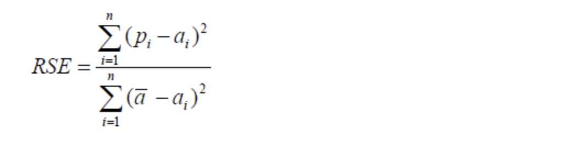
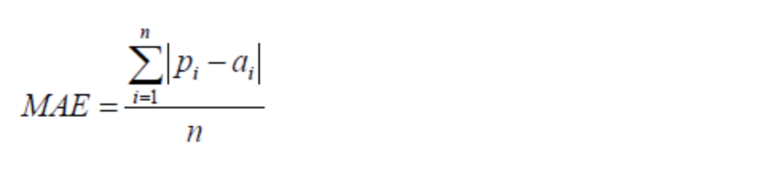
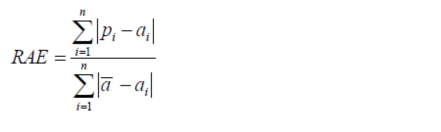
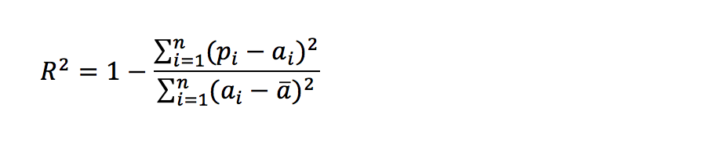

模型评估
模型评估是模型开发过程不可或缺的一部分。它有助于发现表达数据的最佳模型和所选模型将来工作的性能如何。按照数据集的目标值不同，可以把模型评估分为分类模型评估和回归模型评估。
1 分类模型评估
- 准确率
- 预测正确的数占样本总数的比例。
- 精确率
- 正确预测为正占全部预测为正的比例
- 召回率
- 正确预测为正占全部正样本的比例
- F1-score
- 主要用于评估模型的稳健性
- AUC指标
- 主要用于评估样本不均衡的情况
2 回归模型评估

均方根误差（Root Mean Squared Error，RMSE）
RMSE是一个衡量回归模型误差率的常用公式。 然而，它仅能比较误差是相同单位的模型。

相对平方误差（Relative Squared Error，RSE）
与RMSE不同，RSE可以比较误差是不同单位的模型。

平均绝对误差（Mean Absolute Error，MAE)
MAE与原始数据单位相同， 它仅能比较误差是相同单位的模型。量级近似与RMSE，但是误差值相对小一些。

相对绝对误差（Relative Absolute Error，RAE)
与RSE不同，RAE可以比较误差是不同单位的模型。

决定系数 (Coefficient of Determination)
决定系数 (R2)回归模型汇总了回归模型的解释度，由平方和术语计算而得。

R2描述了回归模型所解释的因变量方差在总方差中的比例。R2很大，即自变量和因变量之间存在线性关系，如果回归模型是“完美的”，SSE为零，则R2为1。R2小，则自变量和因变量之间存在线性关系的证据不令人信服。如果回归模型完全失败，SSE等于SST，没有方差可被回归解释，则R2为零。
3 拟合
模型评估用于评价训练好的的模型的表现效果，其表现效果大致可以分为两类：过拟合、欠拟合。
在训练过程中，你可能会遇到如下问题：
训练数据训练的很好啊，误差也不大，为什么在测试集上面有问题呢？
当算法在某个数据集当中出现这种情况，可能就出现了拟合问题。
3.1 欠拟合

因为机器学习到的天鹅特征太少了，导致区分标准太粗糙，不能准确识别出天鹅。
3.2 过拟合

机器已经基本能区别天鹅和其他动物了。然后，很不巧已有的天鹅图片全是白天鹅的，于是机器经过学习后，会认为天鹅的羽毛都是白的，以后看到羽毛是黑的天鹅就会认为那不是天鹅。
过拟合（over-fitting）：所建的机器学习模型或者是深度学习模型在训练样本中表现得过于优越，导致在验证数据集以及测试数据集中表现不佳。